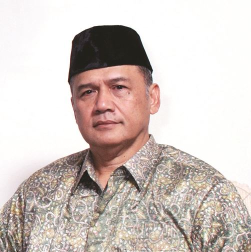
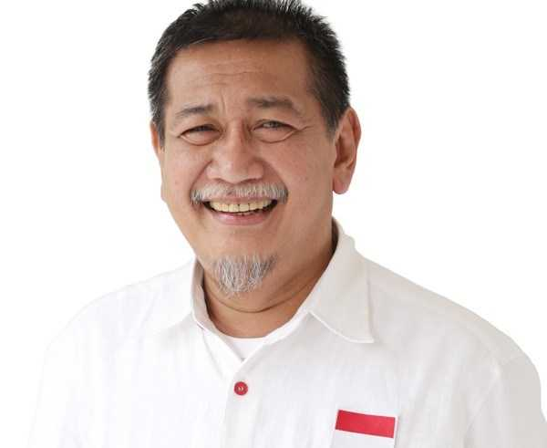

UMBandung Menurut Tokoh
Saya merasa gembira dan bahagia atas berdirinya Universitas Muhammadiyah Bandung. Universitas Muhammadiyah Bandung akan menjadi universitas kebanggaan Kota Bandung khususnya dan Jawa Barat pada umumnya.
Prof. Dr. H. Dadang Kahmad, M.Si.
Ketua PP. Muhammadiyah
UMBandung Menurut Tokoh
Universitas Muhammadiyah Bandung dengan mereposisi menjadi Islamic Technopreneur University adalah sebuah langkah yang sangat tepat di era ekonomi kreatif saat ini, sehingga bisa betul-betul menghasilkan para entrepreneur yang juga berbasis kepada teknologi dan karya-karya inovatif lainnya.
H. Deddy Mizwar
Wakil Gubernur Jawa Barat Periode 2013 - 2018
UMBandung Menurut Tokoh

Saya berharap, dengan adanya Universitas Muhammadiyah Bandung, akan menjadi kebanggan masyarakat Jawa Barat, sehingga mempunyai kontribusi yang besar dalam rangka pendidikan di Jawa Barat.